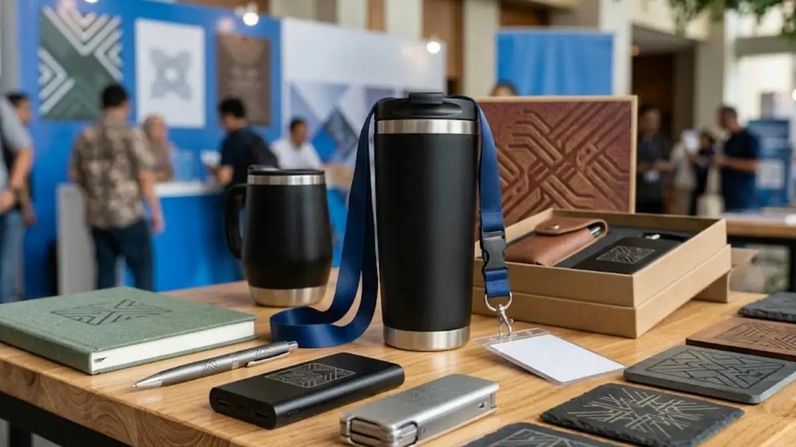

Banyak perusahaan mencari merchandise kantor custom saat mempersiapkan event tahunan, seminar internal, atau kampanye promosi produk baru. Kebutuhan ini muncul karena merchandise memberi kesan profesional sekaligus menjadi media promosi yang dipakai berulang oleh karyawan atau klien. Artikel ini membahas jenis produk favorit, cara memilihnya, dan strategi penggunaannya agar anggaran merchandise memberi dampak maksimal bagi brand perusahaan Anda.
Apa Itu Merchandise Kantor Custom?
Merchandise kantor custom adalah barang kerja sehari-hari yang diproduksi dengan desain, warna, dan logo sesuai identitas visual perusahaan pemesan. Produk ini berbeda dari barang kantor biasa karena dirancang khusus untuk merepresentasikan brand tertentu.
Kategori ini mencakup barang fungsional seperti tumbler, lanyard, pulpen, notebook, dan desk mat. Semua produk tersebut dipilih karena frekuensi penggunaannya tinggi di lingkungan kerja maupun event.
Perusahaan biasanya memesan merchandise kantor custom melalui vendor percetakan atau produsen souvenir korporat. Proses produksinya meliputi pemilihan bahan, desain logo, dan teknik cetak seperti sablon, laser engraving, atau bordir tergantung jenis produknya.
Merchandise ini digunakan dalam berbagai konteks, mulai dari onboarding karyawan baru, seminar internal, gathering tahunan, hingga hadiah untuk klien dan mitra bisnis. Fungsi utamanya adalah memperkuat identitas brand sekaligus memberi nilai guna nyata bagi penerimanya.
Mengapa Perusahaan Membutuhkan Merchandise Kantor Custom untuk Event dan Promosi?
Merchandise kantor custom dibutuhkan karena mampu memperpanjang durasi eksposur brand jauh melampaui waktu berlangsungnya event itu sendiri. Barang yang dipakai berulang setiap hari menjadi media promosi yang terus aktif tanpa biaya tambahan.
Menurut laporan Promotional Products Association International periode 2024-2025, produk berlogo yang dipakai rutin menghasilkan lebih dari 1.000 impresi merek per tahun untuk setiap itemnya. Angka ini menjadikan merchandise sebagai salah satu media promosi dengan biaya per impresi paling rendah dibandingkan iklan digital maupun cetak.
Selain aspek promosi eksternal, merchandise kantor custom juga berperan dalam memperkuat hubungan internal. Karyawan yang menerima merchandise berkualitas cenderung merasa lebih dihargai, sehingga berdampak positif pada engagement dan loyalitas terhadap perusahaan.
Studi industri promotional product secara konsisten menunjukkan bahwa penerima barang bermerek lebih mudah mengingat brand pemberi hingga dua tahun setelah menerimanya. Data ini menegaskan bahwa merchandise bukan sekadar formalitas, melainkan investasi promosi jangka panjang.
Berikut tiga alasan utama perusahaan memasukkan merchandise kantor custom dalam anggaran event dan promosi tahunan mereka:
- Meningkatkan brand recall melalui penggunaan berulang di lingkungan kerja maupun publik.
- Memberi kesan profesional kepada klien, mitra bisnis, dan calon karyawan.
- Menjadi alat penguat budaya perusahaan saat digunakan bersama dalam event internal.

Pilihan Produk Favorit Merchandise Kantor Custom untuk Berbagai Kebutuhan
Produk favorit merchandise kantor custom adalah barang yang menggabungkan fungsi harian dengan ruang branding yang jelas, seperti tumbler, lanyard kulit, pulpen premium, dan desk mat. Kelima kategori ini paling sering dipesan karena tingkat penggunaannya tinggi dan biaya produksinya efisien.
Tabel berikut merangkum pilihan produk favorit beserta konteks penggunaan yang paling sesuai.
| Produk | Konteks Penggunaan Terbaik | Keunggulan Branding |
|---|---|---|
| Tumbler custom | Seminar, gathering, welcome kit karyawan | Dipakai setiap hari, area cetak logo luas |
| Lanyard kulit | Konferensi, event resmi, kartu identitas | Terlihat langsung saat event berlangsung |
| Pulpen premium | Meeting, seminar, hadiah klien | Biaya rendah, jangkauan distribusi luas |
| Desk mat kulit sintetis | Merchandise meja kerja, hadiah onboarding | Eksposur harian di ruang kerja karyawan |
| Notebook custom | Training, workshop, seminar internal | Mendukung pencatatan sekaligus branding |
Tumbler custom menjadi favorit karena fungsinya yang relevan dengan gaya hidup sehat sekaligus mudah dibawa ke berbagai tempat. Produk ini cocok untuk welcome kit karyawan baru maupun suvenir peserta seminar.
Lanyard kulit memberi kesan lebih premium dibandingkan lanyard kain biasa dan sering dipilih untuk event resmi seperti konferensi atau rapat kerja tahunan. Bahan kulit sintetis membuat produk ini lebih tahan lama dan terlihat elegan saat dipakai.
Pulpen premium tetap menjadi pilihan klasik karena biaya produksinya efisien untuk distribusi dalam jumlah besar. Produk ini cocok digunakan sebagai suvenir meeting atau hadiah tambahan dalam paket merchandise lainnya.
Desk mat kulit sintetis semakin populer karena memberi eksposur brand yang konsisten di meja kerja karyawan setiap hari. Produk ini juga memberi kesan rapi dan profesional pada ruang kerja penerimanya.
Bagaimana Cara Memilih Merchandise Kantor Custom yang Tepat untuk Brand Anda?
Cara memilih merchandise kantor custom yang tepat adalah dengan menyesuaikan jenis produk terhadap tujuan event, karakter penerima, dan anggaran yang tersedia. Tiga faktor ini menentukan produk mana yang memberi dampak promosi paling optimal.
Berikut langkah praktis yang dapat diikuti saat menentukan merchandise kantor custom untuk event maupun promosi perusahaan.
- Tentukan tujuan utama merchandise, apakah untuk promosi eksternal, apresiasi internal, atau kombinasi keduanya.
- Identifikasi profil penerima, termasuk usia, gaya kerja, dan preferensi produk yang relevan dengan kebutuhan harian mereka.
- Tetapkan anggaran per unit terlebih dahulu sebelum memilih jenis produk agar kualitas bahan tetap terjaga.
- Pilih produk dengan area cetak logo yang cukup luas agar identitas brand terlihat jelas.
- Konfirmasikan waktu produksi dengan vendor, terutama jika merchandise dibutuhkan untuk tanggal event yang sudah ditetapkan.
Tujuan event sangat memengaruhi pilihan produk. Event promosi eksternal biasanya membutuhkan produk dengan visibilitas tinggi seperti tumbler atau tote bag, sementara event internal seperti onboarding lebih cocok dengan paket kombinasi notebook dan pulpen.
Profil penerima juga menentukan keberhasilan merchandise sebagai alat branding. Karyawan muda cenderung lebih menyukai produk multifungsi seperti tumbler custom, sementara klien korporat lebih menghargai produk premium seperti lanyard kulit atau desk mat eksklusif.
Anggaran per unit sebaiknya ditetapkan di awal proses perencanaan, bukan setelah memilih desain. Pendekatan ini mencegah pembengkakan biaya produksi saat kuantitas pesanan meningkat menjelang hari event.
Merchandise Kantor Custom vs Merchandise Generik: Apa Bedanya?
Merchandise kantor custom berbeda dari merchandise generik dalam hal tingkat personalisasi, kualitas bahan, dan dampak jangka panjang terhadap persepsi brand. Merchandise generik biasanya diproduksi massal tanpa penyesuaian desain khusus untuk satu perusahaan.
Tabel berikut membandingkan kedua jenis merchandise secara lebih rinci.
| Aspek | Merchandise Kantor Custom | Merchandise Generik |
|---|---|---|
| Desain | Disesuaikan penuh dengan identitas brand | Desain umum tanpa personalisasi |
| Kualitas bahan | Dapat dipilih sesuai standar perusahaan | Umumnya standar pasar massal |
| Area branding | Logo dan warna brand terintegrasi penuh | Logo hanya ditempel atau minim ruang cetak |
| Dampak jangka panjang | Memperkuat brand recall secara konsisten | Cenderung dianggap barang umum |
| Fleksibilitas jumlah | Dapat disesuaikan dari skala kecil hingga besar | Umumnya hanya efisien dalam jumlah besar |
Perbedaan paling mencolok terletak pada area branding. Merchandise custom dirancang agar logo dan warna perusahaan menyatu dengan desain produk, sementara merchandise generik hanya menempelkan logo pada produk standar yang sudah ada.
Kualitas bahan pada merchandise custom juga dapat disesuaikan dengan positioning brand. Perusahaan dengan citra premium biasanya memilih bahan kulit sintetis atau logam berkualitas tinggi dibandingkan plastik standar pada merchandise generik.
Dari sisi dampak jangka panjang, merchandise custom lebih efektif membangun asosiasi brand yang konsisten karena desainnya unik dan sulit disamakan dengan produk kompetitor lain di pasar.
"Merchandise custom lebih efektif membangun asosiasi brand yang konsisten karena desainnya unik dan sulit disamakan dengan produk kompetitor lain di pasar."
— Mega Anggun, Penulis Merchandise Kantor
Strategi Menggunakan Merchandise Kantor Custom dalam Event dan Promosi Perusahaan
Strategi penggunaan merchandise kantor custom yang efektif adalah dengan menyesuaikan momen distribusi terhadap siklus perhatian audiens, bukan sekadar membagikannya secara acak. Waktu distribusi yang tepat meningkatkan kemungkinan produk benar-benar digunakan penerimanya.
Distribusi pada awal event, seperti saat registrasi seminar atau pembukaan gathering, membuat merchandise langsung terasosiasi dengan pengalaman positif peserta. Pendekatan ini lebih efektif dibandingkan pembagian di akhir acara ketika perhatian audiens sudah menurun.
Kombinasi produk juga memengaruhi persepsi nilai merchandise. Paket berisi tumbler dan notebook custom, misalnya, terasa lebih bernilai dibandingkan produk tunggal meski biaya totalnya tidak jauh berbeda.
Perusahaan juga perlu mempertimbangkan konsistensi desain lintas produk dalam satu event. Warna, tipografi, dan penempatan logo yang seragam di semua merchandise memperkuat kesan profesional sekaligus memudahkan audiens mengenali brand.
Evaluasi pasca event turut menentukan efektivitas strategi merchandise ke depannya. Mengumpulkan umpan balik sederhana dari penerima tentang produk favorit mereka membantu perusahaan menyempurnakan pilihan merchandise pada event berikutnya.

Kesimpulan
Merchandise kantor custom memberi nilai lebih besar dibandingkan merchandise generik karena personalisasi desain, kualitas bahan, dan dampak jangka panjang terhadap brand recall. Produk favorit seperti tumbler, lanyard kulit, pulpen premium, dan desk mat terbukti efektif untuk kebutuhan event maupun promosi perusahaan.
Pemilihan produk yang tepat bergantung pada tujuan event, profil penerima, dan anggaran yang telah ditetapkan sejak awal perencanaan. Strategi distribusi yang mempertimbangkan waktu dan konsistensi desain turut menentukan seberapa besar dampak merchandise terhadap persepsi brand.
Perusahaan yang ingin memaksimalkan anggaran promosi tahunan dapat mulai memetakan kebutuhan merchandise kantor custom sejak tahap perencanaan event, sehingga setiap produk yang dibagikan benar-benar mendukung tujuan branding secara berkelanjutan.